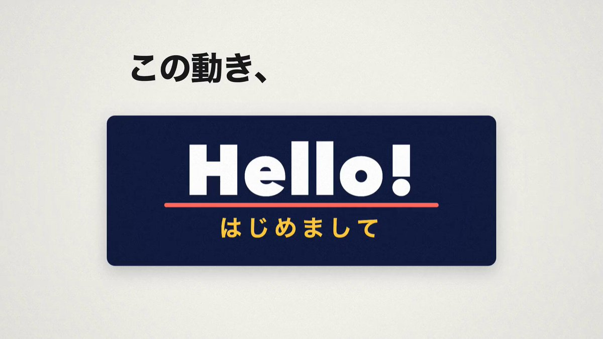

作者：洛克船长（@slashui）· 2026-10-16 · 原帖：x.com/slashui/status/2110860240271048834
导读
洛克船长推荐日本开发者大滝昇平（@showheyohtaki）的开源项目 Motion Prompt（MIT）：把动效设计里的专业"名字"连同可动的示例整理成一个库，让你不用费力描述动画，直接"指给 AI 看"。核心思路：给 AI 一个有名字的参考，比堆形容词更准。
原帖全文

对动画的理解，还得是日本人。
一位日本开发者把动画设计中常用的专业术语，整理成了一个可以直接喂给 AI 的资源库。
涵盖镜头语言、UI 组件、动态图形等 5 大领域，足足 120 个动态效果案例，而且每个都有直观的动画演示。
使用方法也特别简单：
直接把这个 GitHub 项目扔给 Claude Code 或 Codex，让 AI 浏览动效库，挑选你喜欢的效果，再告诉它用在哪里。
以前需要绞尽脑汁描述半天的动画，现在只需要给 AI 一个参考，它就知道你想要什么。
那些默默努力，把人类已有的知识整理好、再交给 AI 的人，值得我们永远尊敬。
地址，⬇️ ⬇️ ⬇️
作者自回复：项目地址 showheyohtaki.github.io/motion-prompt。评论区里作者补充：所以他把这些功效全都列出来，可以看效果有精准的词汇，所以这个库是非常有用的
。
项目要点（据项目主页整理）
- 五类"名字"：动态图形、镜头运动（カメラワーク）、UI 部件、LP/网站演出、照片表现，每条都配可动示例。
- 两种导入：作为 skill 安装
npx skills add showheyohtaki/motion-prompt；或把 GitHub 仓库链接贴给 Claude Code / Codex，让它自行安装。 - 三步用法：让 AI"打开 motion-prompt 的库"→ 在浏览器画廊里点「选ぶ」挑选并写一句备注 →「AIに渡す」交回 AI，再说"把这段视频开头改成这种感觉"。也可直接按编号，如"用 #012 和 #045"。
- 参考实装：示例全部是 Canvas 2D、无外部库、
時刻だけで絵が決まる関数
（画面只由时间决定的函数），可逐帧渲染导出视频；另提供 catalog.json / catalog.tsv。 - 作者还附了"用自己领域、自己语言做一份"的方法与提示词（make-your-own）。
注：原帖称"120 个案例"，以项目主页实际数量为准。